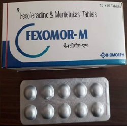

Fexofenadine

Fexofenadine သည် ဓာတ်မတည့်ခြင်းကို ဖြစ်စေသော Histamine ကို ဆန့်ကျင်ပေးသော ဆေးဖြစ်သည်။
ဓာတ်မတည့်သောအခါ ထွက်လာသော Histamine များကို ထက်မထွက်လာအောင်လည်း ပြုလုပ်ပေးသည်။
အသုံးဝင်ပုံ
- ဓာတ်မတည့်ခြင်း လက္ခဏာများ ဖြစ်သော မျက်ရည်များကျခြင်း နှာစေးခြင်း နှာချေခြင်း အင်ပြင်ကွက် အနီကွက်များ ထွက်ခြင်း မျက်လုံးနှင့် နှာခေါင်း ယားယံခြင်း စသည်တို့ကို သက်သာပျောက်ကင်းစေ သည်။
သုံးစွဲပုံ
- သောက်ဆေး အလုံးနှင့် အရည် ပုံစံ ရှိသည်။ တစ်နေ့ကို နှစ်ကြိမ် သောက်ရသည်။
- ဆေးသောက်ရာ ပမာဏသည် အသက်အရွယ် ကိုယ်အလေးချိန်နှင့် ရောဂါပေါ် မူတည်၍ ကွာခြားမှုရှိသည်။
- ဆေးအရည်ကို သောက်ပါက ဆေးပုလင်းကို သေချာစွာလှုပ်ပါ။ သောက်ဆေး အလုံးသောက်ပါက ရိုးရိုး ရေဖြင့်သာ သောက်ပါ။
Aluminium နှင့် Magnesium ပါသော အစာအိမ်ဆေးများကို Fexofenadine သောက်ပြီး ၂ နာရီအတွင်း မသောက်ရပါ။
ဘေးထွက်ဆိုးကျိုးများ
- ချောင်းဆိုးခြင်း
- ဖျားခြင်း
- ဗိုက်အောင့်ခြင်း တို့ ဖြစ်တတ်သည်။
- ထိုလက္ခဏာများ ပိုမို ဆိုးရွားလာပါက ဆရာဝန်နှင့် ပြသပါ။ လွန်စွာ မူးဝေခြင်း ဖောရောင်လာခြင်း (မျက်နှာ) အသက်ရှုရခက်ခြင်း စသော ဘေးထွက်ဆိုးကျိုးများမှာ လွန်စွာ တွေ့ရခဲသည်။
သတိပြုရမည့် အချက်များ
- ဆေးရည်တွင် သကြားဓါတ်ပါဝင်တတ်သောကြောင့် ဆီးချိုသမားများတွင် သတိပြုပြီး သုံးစွဲရမည်။
- ကိုယ်ဝန်ဆောင်များတွင် လိုအပ်မှ ဆရာဝန် ညွှန်ကြားချက်နှင့် သောက်သင့်သည်။
- နို့တိုက်မိခင်များသည်လည်း ဆရာဝန်နှင့်တိုင်ပင်ပြီးမှ သုံးစွဲသင့်သည်။
ဆေးအာနိသင်
- Fexofenadine သောက်ထားသောအခါ အရေပြား ဓါတ်တည့် မတည့်စမ်းသပ်သော စစ်ဆေးမှုများကို မှားစေနိုင်သည်။
ဆေးအလွန်အကျွံသုံးခြင်း
- ဘေးထွက်ဆိုးကျိုး လက္ခဏာများ ဆိုးရွားပါက သို့မဟုတ် အသက်ရှူရခက်ပါက အဆိပ်ကုဌာနသို့ အမြန်ဆုံးသွားရန် လိုသည်။
- ဆေးတွေကို ဘယ်ဆေးမဆို ဆရာဝန် ဒါမှမဟုတ် တတ်ကျွမ်းနားလည်တဲ့ ကျန်းမာရေးဝန်ထမ်းတွေရဲ့ ညွှန်ကြားချက်အတိုင်း တိတိကျကျ သောက်သင့်ပါတယ်။
- မိမိသဘောနဲ့ဆေးရပ်လိုက်တာမျိုး မလုပ်သင့်ပါဘူး။
- ဘေးထွက်ဆိုးကျိုး ပြင်းပြင်းထန်ထန် ခံစားရရင်တော့ ဆရာဝန်နဲ့တိုင်ပင်ဖို့ လိုအပ်ပါတယ်။
Source- ဒေါက်တာချစ်စန္ဒီကျော်